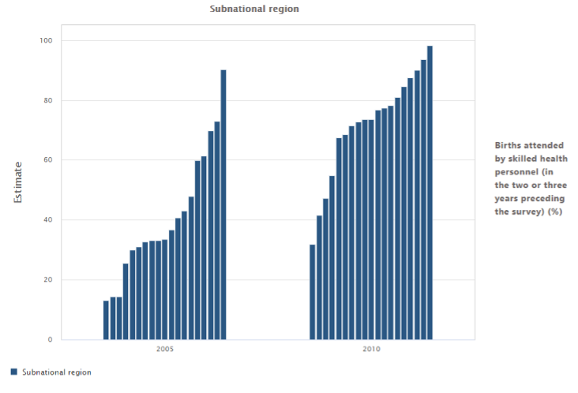
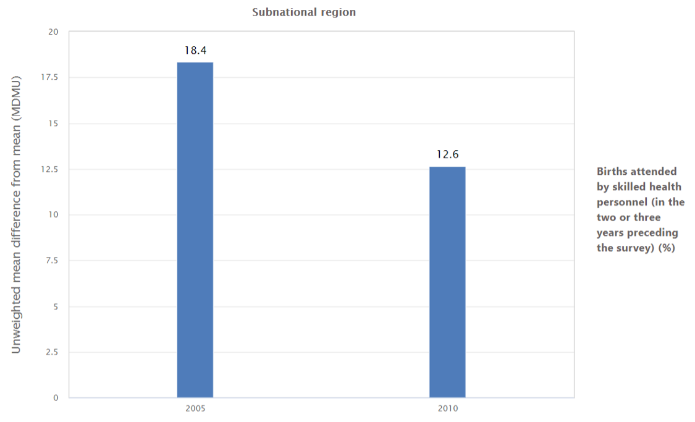

| Figure a. Births attended by skilled health personnel disaggregated by subnational region |
Figure b. Subnational regional inequality in births attended by skilled health personnel: mean difference from mean (unweighted) (MDMU) |
|---|---|
|  |  |
Mean difference from mean (unweighted) (MDMU)
Definition
MDMU shows the unweighted mean difference between each subgroup and the setting average. MDMU is an absolute measure of inequality that takes into account all population subgroups. It is calculated for non-ordered dimensions with more than two subgroups, such as subnational region. MDMU is missing if at least one subgroup estimate or subgroup population share is missing. MDMU has the same unit as the indicator.
Calculation
MDMU is calculated as the average of absolute differences between the subgroup estimates y_j and the setting average μ, divided by the number of subgroups n: MDMU=\frac{1}{n}*\sum_j|y_j-μ| 95% confidence intervals are calculated using a methodology of simulated estimates. The dataset is simulated 100 times and MDMU is calculated for each of the simulated samples. The 95% confidence intervals are based on the 2.5th and 97.5th centiles of the MDMU results.
Interpretation
MDMU takes only positive values, with larger values indicating higher levels of inequality. MDMU is zero if there is no inequality.
Example
Figure a shows data on skilled birth attendance disaggregated by subnational region for two years (2005 and 2010). For each year, there are multiple bars – one for each region. The graph shows that, overall, coverage increased in all regions and inequality between regions reduced over time. MDMU quantifies the level of inequality in each year. Figure b shows that absolute subnational regional inequality, as measured by the MDMU, reduced from 18.4 percentage points in 2005 to 12.6 percentage points in 2010.
💡 MEAN DIFFERENCE FROM MEAN (UNWEIGHTED) (MDMU)
Shows the unweighted mean difference between each population subgroup and the setting average.
Takes only positive values, with larger values indicating higher levels of inequality. Takes the value zero if there is no inequality.
- Measures absolute inequality (absolute measure)
- Suitable for non-ordered inequality dimensions, such as subnational region (non-ordered measure)
- Takes into account all population subgroups (complex measure)
- Does not take into account the population size of subgroups (unweighted measure)